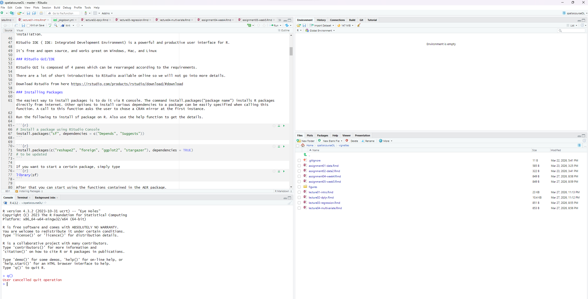
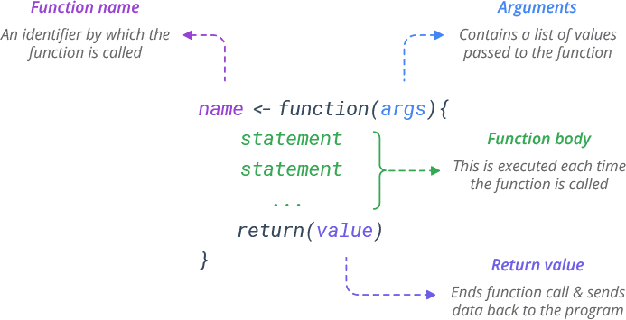
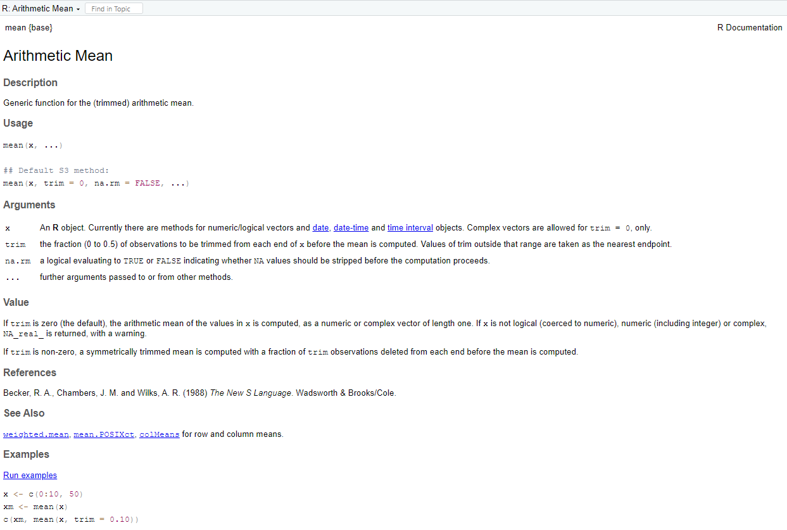
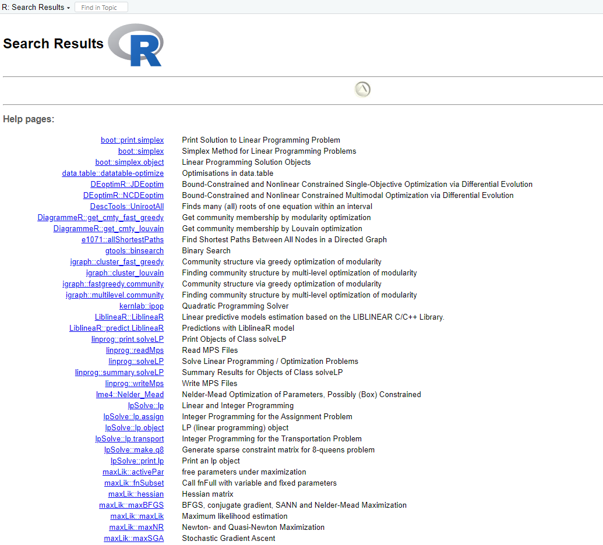
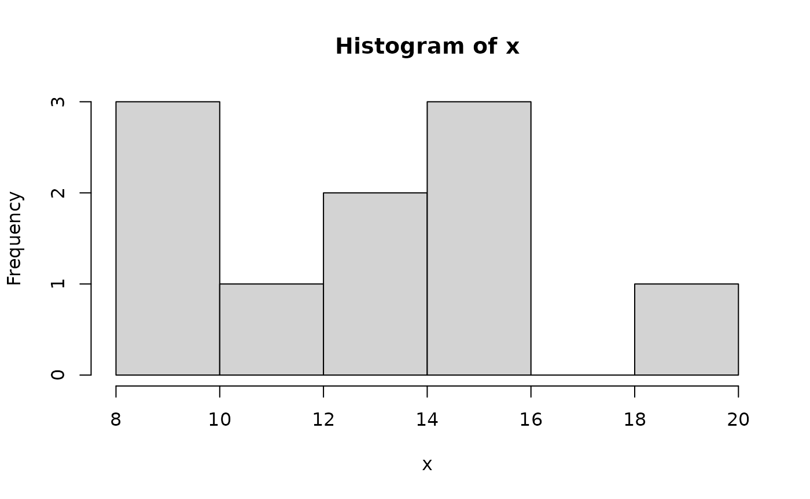
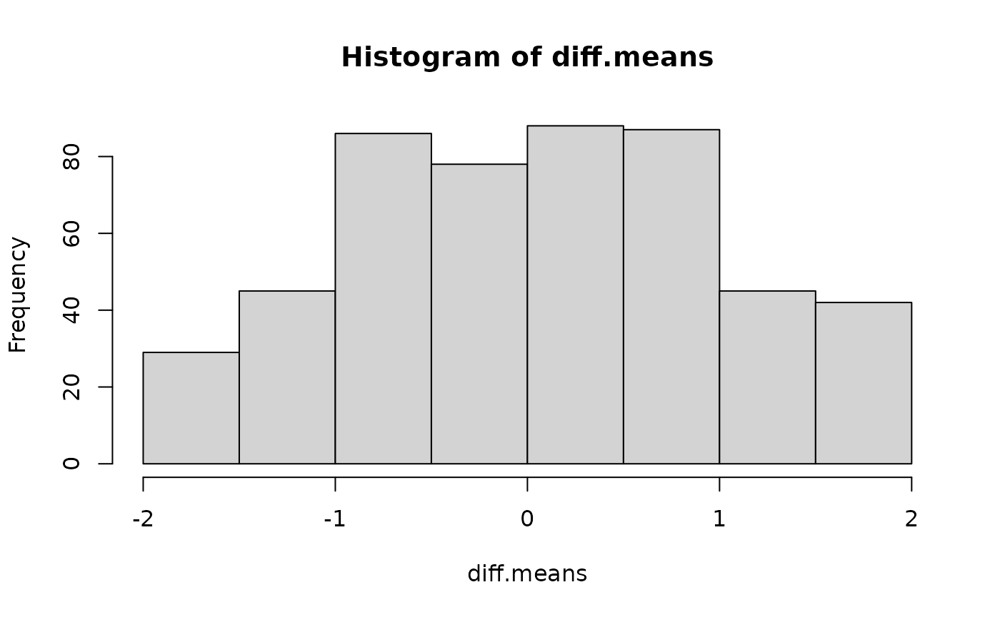

Welcome to the course “Appelied Spatial Data Analysis and Research” course details: https://opas.peppi.uef.fi/en/course/YH00EM30/135183?period=2025-2026
What is R?
Why should we learn R?
R follows a type inference coding structure and provides a wide variety of statistical and graphical techniques, including;
- Linear and non-linear modelling
- Univariate & Multivariate Statistics
- Classical statistical tests
- Time-series analysis/ Econometrics
- Simulation and Modelling
- Datamining-classification, clustering etc.
For computationally intensive tasks, C, C++, and Fortran code can be linked and called at run time.
R is easily extensible through functions and extensions, and the R community is noted for its active contributions in terms of packages.
# Number of R Packages
length(available.packages(repos = "http://cran.us.r-project.org")[, 1])
#> [1] 23578Installing R and RStudio on Windows
The latest version of R can be download from the R homepage:
The page also provides some instructions and FAQ’s on R installation.
Best of all, it’s free and open source, and works great on Windows, Mac, and Linux
RStudio GUI/IDE
RStudio is an integrated development environment (IDE) for R. It includes a console, syntax-highlighting editor that supports direct code execution, as well as tools for plotting, history, debugging and workspace management. You can use RStudio as a graphical front-end to R which means that you can access your scripts and data, find help, and preview plots and output all in one place.
Download Rstudio from here https://rstudio.com/products/rstudio/download/#download

There are a lot of short introductions to RStudio available online so we will not go into more details. If you are not familiar with RStudio, please look one of the tutorials listed here:
Installing Packages
The easiest way to install packages is to do it via R console. The command install.packages(“package name”) installs R packages directly from internet. Other options to install various dependencies to a package can be easily specified when calling this function. A call to this function asks the user to chose a CRAN mirror at the first instance.
Run the following to install sf package on R. Also use the help function to get the details.
# Install a package using RStudio Console
install.packages("sf", dependencies = c("Depends", "Suggests"))
#> Installing package into '/home/runner/work/_temp/Library'
#> (as 'lib' is unspecified)
install.packages(c("reshape2", "foreign", "ggplot2", "stargazer"), dependencies = TRUE)
#> Installing packages into '/home/runner/work/_temp/Library'
#> (as 'lib' is unspecified)
# to be updatedIf you want to start a certain package, simply type
After that you can start using the functions contained in the AER package.
Getting Help
As R is constantly evolving and new functions/packages are introduced every day it is good to know sources of help. The most basic help one can get is via the help() function. This function shows the help file for a function which has been created by package managers.
help("function name")
#> No documentation for 'function name' in specified packages and libraries:
#> you could try '??function name'All the R packages (with few exceptions) have a user’s manual listing the functions in a package. This can be downloaded in PDF format from the R package download page2.
R also provides some search tools given at http://cran.r-project.org/search.html The R Site search is helpful in searching for topics related to problem in hand.
Other than these various good R related blogs are on the internet which can be really helpful. A combined upto date view of 452 contributed blogs can be found at R-bloggers3.
Over all there quite a big community of R Users and help can be found for most of the topics.
Basic features of R
Calculating with R
The basic operations are + (add), - (subtract), * (multiply), and / (divide).
R can also compute powers with the ^ operator. For example,
2^3
#> [1] 8
# same as 2*2*2
2*2*2
#> [1] 8Named storage
R has a workspace known as the global environment that can be used to store the results of calculations, and many other types of objects. For a first example, suppose we would like to store the result of the calculation 1.0025^30 for future use. We will assign this value to an object called interest.30 (value is an interest rate of 0.25% per year and a 30-year period).
interest.30 <- 1.0025^30or equally
interest.30 = 1.0025^30We tell R to make the assignment using an arrow that points to the left, created with the less-than sign (<) and the hyphn (-). R also supports using the equals sign (=) in place the arrow in most circumstances but it is recommended to use the arrow as it makes clear that it is requesting an action rather than stating a relation or making a permanent definition.
We can see the results of this assignment by typing the name of our new object at the prompt:
interest.30
#> [1] 1.077783We can also use interest.30 for further calculations if we wish. For example, we can calculate the bank balance after 30 years at 0.25% annual interest if we start with an initial balance of 3000€.
initial.balance <- 3000
final.balance <- initial.balance*interest.30
final.balance
#> [1] 3233.35which says that increase is
final.balance - initial.balance
#> [1] 233.3498Objects in workspace
The calculation in the previous sections led to the creation of several simple R objects. These objects are stored in the current R workspace. A list of all objects in the current workspace can be printed to the screen using the objects ( ) function:
objects()
#> [1] "final.balance" "initial.balance" "interest.30"Note a synonym for objects ( ) is ls ( ). Remember that if we quit our R session without saving the workspace image, then these objects will disappear. If we save the workspace image, then the workspace will be restored at out next R session.
Vectors
A numeric vector is a list of numbers. The c( ) function is used to collect things together into a vector. We can type
c(0, 7, 8)
#> [1] 0 7 8Again, we assign this to a named object:
x <- c(0, 7, 8)To see simply the contents of x, simply type
x
#> [1] 0 7 8The : symbol can be used to create sequences of increasing (or decreasing) values. For example,
numbers5to20 <- 5:20
numbers5to20
#> [1] 5 6 7 8 9 10 11 12 13 14 15 16 17 18 19 20Vectors can be joined together with the c function. For example, note what happens when we type
c(numbers5to20,x)
#> [1] 5 6 7 8 9 10 11 12 13 14 15 16 17 18 19 20 0 7 8Here is another example of the use of the function c ( ):
some.numbers <- c(2,1,4,45,42,13,15,20,30,109,125,150,305,450,1,2,3,465,78)We can append numbers5to20 to the end of some.numbers, and then append the decreasing sequence from 4 to 1:
a.mess <- c(some.numbers, numbers5to20,4:1)
a.mess
#> [1] 2 1 4 45 42 13 15 20 30 109 125 150 305 450 1 2 3 465 78
#> [20] 5 6 7 8 9 10 11 12 13 14 15 16 17 18 19 20 4 3 2
#> [39] 1Extracting elements from vectors
A nice way to display the 22 nd element of a.mess if to use square brackes to extract just that element:
a.mess[22]
#> [1] 7To print the second element of x, type
x[2]
#> [1] 7We can extract more than one element at a time. For example,
some.numbers[c(3,6,7)]
#> [1] 4 13 15Negative indices can be used to avoid certain elements. For example, we can select all but the second element of x as follows:
x[-2]
#> [1] 0 8The third through eleventh elements of some.numbers can be avoided as follows:
some.numbers[-(3:11)]
#> [1] 2 1 150 305 450 1 2 3 465 78Using a zero index returns nothing. This is not something that one would usually type, but it may be useful in more complicate expressions.
numbers5to20[c(0,3:7)]
#> [1] 7 8 9 10 11Let us see a concrete example:
x<-c(0,-3,4,-1,45,90,-5)
x>0
#> [1] FALSE FALSE TRUE FALSE TRUE TRUE FALSEThe second instruction of the code shown above is a logical condition. As x is a vector, the comparison is carried out for all elements of the vector thus producing a vector with as many logical values as there are elements in x. If we use this vctor of logical values to index x, we get as a result the positions of x that correspond to the true values
x[x>0]
#> [1] 4 45 90Taking advance of the logical operations available in R, you can use more complex logical index vectors, as for instance,
x[x<=-2 | x>5]
#> [1] -3 45 90 -5Vector arithmetic
Arithmetic can be done on R vectors. For example, we can multiply all elements of x by 3:
x*3
#> [1] 0 -9 12 -3 135 270 -15Note that the computation is performed elementwise. Addition, subtraction and division by a constant have the same kind of effect. For example,
y <- x-5
y
#> [1] -5 -8 -1 -6 40 85 -10For another example, consider taking the third power of the elements of x:
x^3
#> [1] 0 -27 64 -1 91125 729000 -125Simple patterned vectors
We saw the use of : operator for producing simple sequences of integers. Patterned vectors can also be produced using the seq( ) function as well as the rep ( ) function. For example, the sequence of odd numbers less than or equl to 21 can be obtained using
seq(1,21,by=2)
#> [1] 1 3 5 7 9 11 13 15 17 19 21Notice the use of by=2 here.
You may also generate decreasing sequences such as the following
5:0
#> [1] 5 4 3 2 1 0Note that information about function can be get by adding ? before seq function
?seqRepeated patterns are obtained using rep ( ) function. Consider following examples:
rep(3,12) # repeat the value 3, 12 times
#> [1] 3 3 3 3 3 3 3 3 3 3 3 3Missing values and other special values
The missing value symbol is NA. Missing values often arise in real data problem but they can also arise because of the way of calculations are performed.
some.evens<-NULL
some.evens[seq(2,20,2)] <- seq(2,20,2)
some.evens
#> [1] NA 2 NA 4 NA 6 NA 8 NA 10 NA 12 NA 14 NA 16 NA 18 NA 20What happened there is that we assigned values to elements 2,4,…, 20 but never assigned values for elements 1,3,…,19 so R uses NA to signal that the value is unknown.
Recall that x contains the values (0,7,8). Consider
x/x
#> [1] NaN 1 1 1 1 1 1The NaN symbol denotes a value which is “not a number” which arises as a results of attempting to compute the indeterminate 0/0.
In other case, special values may be shown, or you may get an error or warning message:
1/x
#> [1] Inf -0.33333333 0.25000000 -1.00000000 0.02222222 0.01111111
#> [7] -0.20000000Here, R has tried to evaluate 1/0.
Character vectors
Scalars and vectors can be made up of strings of characters instead of numbers. All elements of a vector must be of the same type. For example,
colors <- c("red","yellow","blue")
more.colors <- c(colors, "green","magenta","cyan") # this appended some new elements to colors
z <- c("red","green",1) # an attempt to mix data types in a vectorTo see the content of more.colors and z, simply type
more.colors
#> [1] "red" "yellow" "blue" "green" "magenta" "cyan"
z
#> [1] "red" "green" "1"There are two basic operations you might want to perform on character vectors. To take substrings, use substr( ). It takes arguments substr(x,start,stop), where x is the vector of character strings, and start and stop say which characters to keep. For example, to print the first two letters of each color use
substr(colors,1,2)
#> [1] "re" "ye" "bl"The other basic function is building up strings by concatenation. Use the paste ( ) function for this. For example,
paste(colors, "flowers")
#> [1] "red flowers" "yellow flowers" "blue flowers"Data Elements in R
In R, data is organized using a variety of structured data elements that make statistical analysis efficient and expressive. While vectors form the foundation, R also provides several higher‑level data structures that allow you to represent more complex forms of information. Among the most commonly used are factors, matrices, arrays, and data frames.
Each of these structures serves a different purpose:
- Factors help you work with categorical variables.
- Matrices and arrays allow you to store numerical data in two or more dimensions.
- Data frames provide a flexible, table‑like format ideal for statistical modeling and data analysis.
Understanding how these data elements are created, stored, and manipulated will give you a strong foundation for working effectively with R in data science, research, and statistical applications.
Factors
Factors offer an alternative way of storing character (nominal) data. For example, a factor with four elements and having the two levels, control and treatment can be created using:
gpr <- c("control", "treatment","control","treatment")
gpr
#> [1] "control" "treatment" "control" "treatment"You can transform this vector into a factor by entering
gpr <- factor(gpr)
gpr
#> [1] control treatment control treatment
#> Levels: control treatmentFactors have levels that are the possible values they can take. Factors are a more efficient way of storing character data when there are repeats among the vector elements. To see what the codes are for our factor, we can type
as.integer(gpr)
#> [1] 1 2 1 2The labels for the levels are only stored once each, rather than being repeated. The codes are indices into the vector of levels:
levels(gpr)
#> [1] "control" "treatment"
levels(gpr)[as.integer(gpr)]
#> [1] "control" "treatment" "control" "treatment"One of the many things you can do with factors is to count the occurrence of each possible value. Let’s try this
table(gpr)
#> gpr
#> control treatment
#> 2 2Let’s create another vector
Table-function can be used also for cross-tabulation of several factors.
table(gpr,g)
#> g
#> gpr f m
#> control 1 1
#> treatment 0 2Matrices and arrays
Data elements can be stored in an object with more than one dimension. This may be useful in several situations. Arrays store data elements in several dimensions. Matrices are a special case of arrays with two single dimensions.
To arrange values into matrix, we use the matrix ( ) function:
m <- matrix(1:6, nrow=2,ncol=3)
m
#> [,1] [,2] [,3]
#> [1,] 1 3 5
#> [2,] 2 4 6We can then access element using two indices. For example, the value in the first row, second column is
m[1,2]
#> [1] 3Whole rows or columns of matrices may be selected by leaving the corresponding index blank:
m[1,]
#> [1] 1 3 5
m[,1]
#> [1] 1 2A more general way to store data is in an array. Arrays have multiple indices, and are created using the array function:
Data frames
Most data sets are stored in R as data frames. These are like matrices, but with the columns having their own names. Columns can be of different types from each other. Use the data.frame( ) function to construct data frames from vectors.
colors <- c("red","yellow","blue")
numbers <- c(1,2,3)
colors.and.numbers <- data.frame(colors, numbers, more.numbers=c(4,5,6))We can see the contents of a data frame:
colors.and.numbers
#> colors numbers more.numbers
#> 1 red 1 4
#> 2 yellow 2 5
#> 3 blue 3 6Elements of data frame can be accessed like a matrix:
colors.and.numbers[1,1]
#> [1] "red"Moreover, you can use the column names for accessing full columns of a data frame:
colors.and.numbers$colors
#> [1] "red" "yellow" "blue"Remember how to subset data frame:
colors.and.numbers$numbers>1
#> [1] FALSE TRUE TRUE
new.data<-colors.and.numbers[colors.and.numbers$numbers>1,]
new.data
#> colors numbers more.numbers
#> 2 yellow 2 5
#> 3 blue 3 6Here is also couple of examples:
subset(colors.and.numbers,numbers >1)
#> colors numbers more.numbers
#> 2 yellow 2 5
#> 3 blue 3 6
subset(colors.and.numbers,numbers==1, numbers:more.numbers)
#> numbers more.numbers
#> 1 1 4You can add new columns to a data frame in a following way:
colors.and.numbers$new<-c(12,11,10)
colors.and.numbers
#> colors numbers more.numbers new
#> 1 red 1 4 12
#> 2 yellow 2 5 11
#> 3 blue 3 6 10Functions in R
One of the great strengths of R is the user’s ability to add functions. In fact, many of the functions in R are actually functions of functions. The functions take input, perform operations on the input and return output. The structure of a function is given below (see the webpage: https://www.learnbyexample.org/r-functions/):

The agrument can defined with or without defaults and when the function is called the arguments are passed to the statements.
Functions in R are “first class objects”, which means that they can be treated much like any other R object. Importantly, 1) functions can be passed as arguments to other functions and 2) functions can be nested, so that you can define a function inside of another function.
Let’s create a simple function:
f<-function(x) {
a=b*x^2
return(a)
}
a<-2
b<-1
f(5)
#> [1] 25The function returns 25, because
- The function found b in the workspace that called it
- In the console a is still 2 because the function created its own local variable a.
Here is another simple example where we define a function fahrenheit_to_celsius that converts temperatures from Fahrenheit to Celsius:
fahrenheit_to_celsius <- function(temp_F) {
temp_C <- (temp_F - 32) * 5 / 9
return(temp_C)
}We define fahrenheit_to_celsius by assigning it to the output of function. The list of argument names are contained within parentheses. Next, the body of the function–the statements that are executed when it runs–is contained within curly braces ({}). The statements in the body are indented by two spaces, which makes the code easier to read but does not affect how the code operates.
When we call the function, the values we pass to it are assigned to those variables so that we can use them inside the function. Inside the function, we use a return statement to send a result back to whoever asked for it. You can test the function:
fahrenheit_to_celsius(10)
#> [1] -12.22222Example 1: Creating new functions: Standard error
R allows the user to create new functions. This is a useful feature, particularly when you want to automate certain tasks that you have to repeat over and over. Let’s start with a simple example. Suppose you want to calculate the standard error of a mean associated to a set of values.
Before proceeding to create the function we should check whether there is already a function with this name in R. Let’s type:
seThe error printed by R indicates that we are safe to use that name. Following code is a possible way to create our function:
After creating this function, you can use it as follows:
test<-c(2,4,3,6,4,9,11,3,7,6)
se(test)
#> [1] 0.9098229The value returned by any function can be decided using the function return() or, alternatively, R returns the result of the last expression that was evaluated within the function.
Example 2: More advanced function of basic statistics
basic.stats <- function(x, more=F) {
stats <- list()
clean.x <- x[!is.na(x)]
stats$n <- length(x)
stats$nNAs <- stats$n-length(clean.x)
stats$mean <- mean(clean.x)
stats$std <- sd(clean.x)
stats$med <- median(clean.x)
if (more) {
stats$skew <- sum(((clean.x - stats$mean)/stats$std)^3)/length(clean.x)
stats$kurt <- sum(((clean.x - stats$mean)/stats$std)^4)/length(clean.x)-3
}
unlist(stats)
}This function has a parameter (more) that has a default value (F). This means that you can call this function with or without setting this parameter. Below are examples of these two alternatives:
basic.stats(test)
#> n nNAs mean std med
#> 10.000000 0.000000 5.500000 2.877113 5.000000
basic.stats(test,more=T)
#> n nNAs mean std med skew kurt
#> 10.0000000 0.0000000 5.5000000 2.8771128 5.0000000 0.5542469 -1.0902009Built-in functions in R
If you know the name of the function that you need help with, the help ( ) function is likely sufficient. For example, for help on the q ( ) function, type
?qor
help(q)Another commonly used function in R is mean ( ). Typing
help(mean)will open a new window. It content is:

This tells us that mean ( ) will compute the ordinary arithmetic average or it will do something called “trimming” if we ask for it. The help document contain also an example that describe the use of mean ( ) function.
Finding help when you don´t know the function name
It is often convenient to use help.start( ) function. This brings up an internet browser which will show you a menu of several options.
Another function that is used is help.search( ). For example, to see if there are any function that do optimization, type
help.search("optimization"), and its open a new window contain following information:

Also web search engines such as Google are often very useful for finding help on R.
Built-in graphics functions
Two basic plots are the histogram and the scatterplot. Consider

and

Another useful plotting function is the curve ( ) function for plotting the graph of a univariate mathematical function on an interval. The left and right endpoints fo the interval are specified by from and to arguments. A simple example involves plotting the sine function on the interval [0,6π]:
curve(expr=sin, from=0, to=6*pi) # Figure 5Later in this course, we will explore the graphics of the ggplot2 package in more detail.
R and Programming
Programming involves writing relatively complex systems of instructions. There are two broad styles of programming: the imperative style (used in R) involves stringing together instructions telling the computer what to do. The declarative style (used in HMTL in web pages) involves writing a description of the end result, without giving the details about how to get there. R programming may be procedural (describing what steps to take to achieve a task), modular (broken up in to self-contained packages), object-oriented (organized as a collection of functions which do specific calculations without having external side-effects), among other possibilities.
The for ( ) loop
The for ( ) statement allows one to specify that a certain operation should be repeated a fixed number of times.
Syntax for (names in vector) {commands}
This sets a variable called name equal to each of the elements of vector in sequence. For each value, whatever commands are listed within the curly braces will be performed. The curly braces serve to group the commands so that they are treated by R as a single command. If there is only one command to execute, the braces are not needed.
Example: The Fibonacci sequence is a famous sequence in mathematics. The first two elements are defined as 1,1]. Subsequent elements are defined as the sum of the preceding two elements. For example, the third element is 2, the fourth element is 3, the fifth element is 5, and so on.
To obtain first 12 Fibonacci numbers in R, we can use
Fibonacci <- numeric(12)
Fibonacci[1] <- Fibonacci[2] <- 1
for (i in 3:12) Fibonacci[i] <- Fibonacci[i-2]+Fibonacci[i-1]Understanding the code: The first line sets up a numeric vector of length 12 with the name Fibonacci. This vector consists of 12 zeroes. The second line updates the first two elements of Fibonacci to the value 1. The third line updates the third element, fourth element, and so on according to the rule defining the Fibonacci sequence. In particular, Fibonacci[3] is assigned the value of Fibonacci[1] + Fibonacci[2], i.e. 2. Fibonacci[4] is then assigned the latest value of Fibonacci[2] + Fibonacci[3] , giving it the value 3. The for ( ) loop updates the third through 12th element of the sequence in this way.
To see all types, type in
Fibonacci
#> [1] 1 1 2 3 5 8 13 21 34 55 89 144Example: Suppose a car dealer promotes two options for the purchase of a new 20 000€ car. The first option is for the customer to pay up front and receive a 1 000€ rebate. The second option is “0%-interest financing” where the customer makes 20 monthly payments of 1 000€ beginning in one month’s time.
Because of option 1, the effective price of the car is really 19 000€, so the dealer is really charging some interest rate i for option 2. We can calculate this value using the formula for the present value of an annuity:
By multiplying both sides of this equation by i and dividing by 19000, we get the form of a fixed-point problem
By taking an initial guess for i and plugging it into the right-hand side of this equation, we can get an “updated” value for I on the left. For example, if we start with i=0.006, then our update is
By plugging this updated value into the right-hand side of the equation again, we get a new update:
This kind of fixed-point iteration usually requires many iterations before we can be confident that we have the solution to the fixed-point equation. Here is R code to work out the solution after 1 000 iterations.
i <- 0.006
for (j in 1:1000){
i <- (1-(1+i)^(-20))/19
}
i
#> [1] 0.004935593Example: Let’s create a vector containing number 1-10:
Go through the samples one by one and print them out:
for (thissample in samples)
{
print(thissample)
}
#> [1] 1
#> [1] 2
#> [1] 3
#> [1] 4
#> [1] 5
#> [1] 6
#> [1] 7
#> [1] 8
#> [1] 9
#> [1] 10Let’s do something inside the for loop:
for (thissample in samples)
{
str <- paste(thissample,"is current sample",sep=" ")
print(str)
}
#> [1] "1 is current sample"
#> [1] "2 is current sample"
#> [1] "3 is current sample"
#> [1] "4 is current sample"
#> [1] "5 is current sample"
#> [1] "6 is current sample"
#> [1] "7 is current sample"
#> [1] "8 is current sample"
#> [1] "9 is current sample"
#> [1] "10 is current sample"Let’s terminate the loop when the sample is 3:
for (thissample in samples)
{
if (thissample == 3) break
str <- paste(thissample,"is current sample",sep=" ")
print(str)
}
#> [1] "1 is current sample"
#> [1] "2 is current sample"Let’s ignore when the sample number is even:
The if ( ) statement
The if ( ) statement allows us to control which statements are executed, and sometimes this is more convenient.
Syntax if (condition) {commands when TRUE} if (condition( {commands when TRUE} else {commands when FALSE}
This statement causes a set of commands to be invoked if condition evaluates TRUE. The else part is optional, and provides an alternative set of commands which are to be invoked in case the logical variables is FALSE.
A simple example:
x <- 3
if (x > 2) y <- 2*x else y <- 3*xSince x > 2 is TRUE, y is assigned 2 * 3 = 6. If it hadn´t been true, y would have been assigned the value of 3 * x. We can confirm this:
y
#> [1] 6The if ( ) statement is often used inside user-defined functions. The following is a typical example.
Example: The correlation between two vectors of numbers is often calculated using the cor ( ) function. It is supposed to give a measure of linear association. We can add a scatter plot of data as follows:
class(corplot)
#> [1] "function"We can apply this function to two vectors without plotting by typing
Or if we
#> [1] 0.953821and get a simple figure.
Example: The function that follows is based on the sieve of Eratosthenes, the oldelst known systematic method for listing prime numbers up to a given value n. The idea is as follows: begin with a vector of numbers from 2 to n. Beginning with 2, eliminate all multiples of 2 which are larger than 2. Then move to the next number remaining in the vector, in this case, 3. Now, remove all multiples of 3 which are larger than 3. Proceed through all remaining entries of the vector in this way. The entry for 4 would have been removed in the first round, leaving 5 as the next entry to work with after 3; all multiples of 5 would be removed at the next step and so on.
Eratosthenes <- function(n) {
if (n >= 2) {
sieve <- seq(2,n)
primes <- c()
for (i in seq(2,n)) {
if (any(sieve == i)) {
primes <- c(primes,i)
sieve <- c(sieve[(sieve %% i) != 0], i)
}
}
return(primes)
} else {
stop("Input value of n should be at least 2.")
}
}Here are a couple of examples of the use of this function:
Eratosthenes(50)
#> [1] 2 3 5 7 11 13 17 19 23 29 31 37 41 43 47Understanding the code: The purpose of the function is to provide all prime numbers up to the given value n. The basic idea of the program is contained in the lines:
sieve <- seq(2,n)
primes <- c()
for (i in seq(2,n)) {
if (any(sieve == i)) {
primes <- c(primes,i)
sieve <- c(sieve[(sieve %% i) != 0], i)
}
}The sieve object holds all the candidates for testing. Initially, all integers from 2 through n are stored in this vector. The primes object is set up initially empty, eventually to contain all of the primes that are less than or equal to n. The composite numbers in sieve are removed, and the primes are copied to primes.
Each integer i from 2 through n is checked in sequence to see whether it is still in the vector. The any ( ) function returns a TRUE if at least one of the logical vector elements in its argument is TRUE. In the case that i is still in the sieve vector, it must be a prime since it is the smallest number that has not been eliminated yet. All multiples of i are eliminated, since they are necessarily composite, and i is appended to primes. The expression (sieve %% i) == 0 would give TRUE for all elements of sieve which are multiples of i; since we want to eliminate these elements and save all other elements, we can negate this using ! (sieve %% i == 0) or sieve %% i != 0. Then we can eliminate all multiples of i from the sieve vector using
sieve <- sieve[(sieve %% i) != 0]Note that this eliminates i as well, but we have already saved it in primes.
The while ( ) loop
Sometimes we need to do some calculations and keep going as long as a condition holds. The while ( ) statement accomplishes this.
Syntax while (condition) {statements}
The condition is evaluated, and if it evaluates to FALSE, nothing more is done. If it evaluates to TRUE the statements are executed, condition is evaluated again, and the process is repeated.
Example:
z <- 0
while(z < 5) {
z <- z + 2
print(z)
}
#> [1] 2
#> [1] 4
#> [1] 6Example: Suppose we want to list all Fibonacci numbers less than 300. We don’t know beforehand how long this list is, so we wouldn’t know how to stop the for ( ) loop at the right time but a while ( ) loop is perfect:
Fib1 <- 1
Fib2 <- 1
Fibonacci <- c(Fib1,Fib2)
while (Fib1 < 300) {
Fibonacci <- c(Fibonacci,Fib2)
oldFib2 <- Fib2
Fib2 <- Fib1 + Fib2
Fib1 <- oldFib2
}Understanding the code: The central idea is contained in the lines
while (Fib1 < 300) { Fibonacci <- c(Fibonacci,Fib2)
That is as long as the latest Fibonacci number created (in Fib2) is less than 300, it is appended to the growing vector Fibonacci. Thus we must ensure that Fib2 actually contains the updated Fibonacci number. By keeping track of the two most recently added numbers (Fib1 and Fib2) we can do the update
Fib2 <- Fib1 + Fib2
Now Fib1 should be updated to the old value of Fib2 but that has been overwritten by the new value. So before executing the above line, we make a copy of Fib2 in oldFib2. After updating Fib2 we can assign the value in oldFib2 to Fib1.
In order to start things off, Fib1 and Fib2, and Fibonacci need to be initialized. That is, within the loop, these objects will be used, so they need to be assigned sensible starting values.
To see the final result of the computation, type
Fibonacci
#> [1] 1 1 1 2 3 5 8 13 21 34 55 89 144 233 377The repeat ( ) loop, and the break and next statements
Syntax repeat {statements}
Loop is repeated until a break is specified. This means there needs to be a second statement to test whether or not to break from the loop. Break statement typically takes the form
if (condition) break
which is not a requirement of the syntax. The break statement causes the loop to terminate immediately. break statements can also be used in for ( ) and while ( ) loops. The next statement causes control to return immediately to the top of the loop; it can also used in any loops.
z <- 0
repeat {
z <- z + 1
print(z)
if(z > 100) break()
}
#> [1] 1
#> [1] 2
#> [1] 3
#> [1] 4
#> [1] 5
#> [1] 6
#> [1] 7
#> [1] 8
#> [1] 9
#> [1] 10
#> [1] 11
#> [1] 12
#> [1] 13
#> [1] 14
#> [1] 15
#> [1] 16
#> [1] 17
#> [1] 18
#> [1] 19
#> [1] 20
#> [1] 21
#> [1] 22
#> [1] 23
#> [1] 24
#> [1] 25
#> [1] 26
#> [1] 27
#> [1] 28
#> [1] 29
#> [1] 30
#> [1] 31
#> [1] 32
#> [1] 33
#> [1] 34
#> [1] 35
#> [1] 36
#> [1] 37
#> [1] 38
#> [1] 39
#> [1] 40
#> [1] 41
#> [1] 42
#> [1] 43
#> [1] 44
#> [1] 45
#> [1] 46
#> [1] 47
#> [1] 48
#> [1] 49
#> [1] 50
#> [1] 51
#> [1] 52
#> [1] 53
#> [1] 54
#> [1] 55
#> [1] 56
#> [1] 57
#> [1] 58
#> [1] 59
#> [1] 60
#> [1] 61
#> [1] 62
#> [1] 63
#> [1] 64
#> [1] 65
#> [1] 66
#> [1] 67
#> [1] 68
#> [1] 69
#> [1] 70
#> [1] 71
#> [1] 72
#> [1] 73
#> [1] 74
#> [1] 75
#> [1] 76
#> [1] 77
#> [1] 78
#> [1] 79
#> [1] 80
#> [1] 81
#> [1] 82
#> [1] 83
#> [1] 84
#> [1] 85
#> [1] 86
#> [1] 87
#> [1] 88
#> [1] 89
#> [1] 90
#> [1] 91
#> [1] 92
#> [1] 93
#> [1] 94
#> [1] 95
#> [1] 96
#> [1] 97
#> [1] 98
#> [1] 99
#> [1] 100
#> [1] 101Permutation Test and Resampling
The bootstrap, permutation tests, and other resampling methods are part of this revolution. Resampling methods allow us to quantify uncertainty by calculating standard errors and confidence intervals and performing significance tests. They require fewer assumptions than traditional methods and generally give more accurate answers (sometimes very much more accurate). Moreover, resampling lets us tackle new inference settings easily.
Resampling also helps us understand the concepts of statistical inference. The sampling distribution is an abstract idea. The bootstrap analog (the “bootstrap distribution”) is a concrete set of numbers that we analyze using familiar tools like histograms. The standard deviation of that distribution is a concrete analog to the abstract concept of a standard error. Resampling methods for significance tests have the same advantage; permutation tests produce a concrete set of numbers whose “permutation distribution” approximates the sampling distribution under the null hypothesis. Comparing our statistic to these numbers helps us understand p-values.
Here is a summary of the advantages of these new methods:
- Fewer assumptions: For example, resampling methods do not require that distributions be Normal or that sample sizes be large.
- Greater accuracy: Permutation tests, and some bootstrap methods, are more accurate in practice than classical methods.
- Generality: Resampling methods are remarkably similar for a wide range of statistics and do not require new formulas for every statistic. You do not need to memorize or look up special formulas for each procedure.
- Promote understanding: Bootstrap procedures build intuition by providing concrete analogies to theoretical concepts
Here are two links for good examples of the permutation tests: • http://spark.rstudio.com/ahmed/permutation/ • http://faculty.washington.edu/kenrice/sisg/SISG-08-06.pdf
Permutation test
Let’s create a vector where elements [1:5] belong to group A and elements [6:10] belong to group B
y2=c(9.65, 5.09, 8.80, 7.42, 6.68, 8.79, 9.36, 9.64, 9.02, 8.86)Now let’s create permutation test:
First calculate the observed difference in group averages
Do the test with 500 permutations
diff.means=numeric()
for (i in 1:500){
perm=sample(y2,10,replace=F)
diff.means[i]=mean(perm[1:5])-mean(perm[6:10])
}Draw a histogram from sampled differences
hist(diff.means)
Let’s calculate the p-value for observed difference:
Note that p-value indicates the probability of getting the observed difference in averages by random samples, abs() calculate the two-sided p-value.
Let’s calculate the 95% confidence intervals for the p-value (approximation of the normal distribution):
pm.part=1.96*sqrt(p2*(1-p2)/500)
ucb=p2+pm.part
lcb=p2-pm.part
lcb;ucb
#> [1] 0.0951109
#> [1] 0.1528891Compare Permutation Test with other tests
Let’s create a t-test and a Wilcoxon test and compare the results between these approaches. Here we simply define a numeric vector y2 containing ten observations.
y2=c(9.65, 5.09, 8.80, 7.42, 6.68, 8.79, 9.36, 9.64, 9.02, 8.86)We print out the values just to confirm that the vector was created correctly.
y2
#> [1] 9.65 5.09 8.80 7.42 6.68 8.79 9.36 9.64 9.02 8.86Preparing the data: Next, we create a grouping variable and combine it with the response values. This allows us to perform two‑sample tests.
group<-c(1,1,1,1,1,2,2,2,2,2)Here, group indicates the group membership of each observation.
The first 5 observations belong to group 1 The last 5 observations belong to group 2
We now combine the response variable (y2) and the group indicator into a single object:
data<-cbind(y2,group)
class(data)
#> [1] "matrix" "array"
data<-as.data.frame(data)cbind() binds the variables column‑wise, and as.data.frame() converts the result into a data frame suitable for statistical testing.
T-test
A t‑test compares the mean of two groups under the assumption that the data are normally distributed.
Here, we perform an independent two‑sample t‑test using formula notation:
- data$y2 is the numeric response variable
- data$group is the grouping variable
?t.test
t.test(data$y2~data$group)
#>
#> Welch Two Sample t-test
#>
#> data: data$y2 by data$group
#> t = -1.9687, df = 4.3205, p-value = 0.1151
#> alternative hypothesis: true difference in means between group 1 and group 2 is not equal to 0
#> 95 percent confidence interval:
#> -3.8061332 0.5941332
#> sample estimates:
#> mean in group 1 mean in group 2
#> 7.528 9.134The output shows whether there is a statistically significant difference between the group means.
wilcox.test
The Wilcoxon rank‑sum test is a non‑parametric alternative to the t‑test. It does not assume normality and instead compares the distributions of the two groups.
?wilcox.test
wilcox.test(data$y2~data$group)
#>
#> Wilcoxon rank sum exact test
#>
#> data: data$y2 by data$group
#> W = 6, p-value = 0.2222
#> alternative hypothesis: true location shift is not equal to 0This test examines whether one group tends to have larger values than the other, based on ranks rather than means.
Data import and export
Working with real‑world data in R almost always begins with bringing data into the environment and ends with saving results for further use. R provides a wide range of tools for importing data from common formats—such as CSV, Excel, text files, and statistical software packages—as well as from databases and online sources. Equally important, R allows you to export cleaned, transformed, or analyzed data back into various file formats for sharing, reporting, or future analysis.
Understanding how to efficiently read and write data is a fundamental skill for any R user. Mastery of these techniques ensures a smooth workflow, helps avoid common pitfalls, and enables seamless collaboration with others who may use different software or data formats.
Changing directories and reading data frames
In Windows versions of R, it is possible to use the File ׀ Change dir… menu to choose the directory or folder to which you wish to direct your data.
It is also possible to use the setwd ( ) function. For example, to work with data in the folder mydata on the C-drive type
Data sets frequently consist of more than one column of data where each column represents measurements of a single variable. Each row usually represents a single observation. This format s referred to as case-by-variable format.
For example, the following data set consists of four observation on the three variables x, y and z.
If such data set is stored in a file called pretend-dat in te directory of myfiles on the C-drive, then it can be read into an R data frame. This can be accomplished by typing
pretend.df <- read.table("c:/myfiles/pretend.dat",header=T)In a data frame, the columns are named. To see the x column, type
pretend.df$xExamples
Import a CSV file:
data_csv <- read.csv("data/mydata.csv")View first rows
head(data_csv)Import a CSV file using readr (tidyverse)
Import an Excel file
library(readxl)
# Read the first sheet
data_excel <- read_excel("data/mydata.xlsx")
# Read a specific sheet
data_excel2 <- read_excel("data/mydata.xlsx", sheet = "Sheet2")Import a text file (tab‑delimited)
data_txt <- read.table("data/mydata.txt",
header = TRUE,
sep = "\t")
head(data_txt)Import an RDS file
Import a dataset from the web
url <- "https://raw.githubusercontent.com/user/repo/main/data.csv"
data_web <- read_csv(url)
head(data_web)Import data from a database (SQLite example)
library(DBI)
library(RSQLite)
con <- dbConnect(SQLite(), "database.db")
# Read table
data_db <- dbReadTable(con, "table_name")
# Or run a query
data_query <- dbGetQuery(con, "SELECT * FROM table_name")
dbDisconnect(con)Import SPSS, Stata, or SAS files (haven package)
Data export
There are numerous methods for exporting R objects into other formats . For SPSS, SAS and Stata, you will need to load the foreign packages. For Excel, you will need the xlsReadWrite package.
To A Tab Delimited Text File:
write.table(mydata, "c:/mydata.txt", sep="\t") To A CSV File:
write.csv(mydata, "c:/mydata.txt", sep=";")To an Excel Spreadsheet:
To SPSS: Write out text datafile and an SPSS program to read it
library(foreign)
write.foreign(mydata, "c:/mydata.txt", "c:/mydata.sps", package="SPSS") To SAS: Write out text datafile and an SAS program to read it
library(foreign)
write.foreign(mydata, "c:/mydata.txt", "c:/mydata.sas", package="SAS")